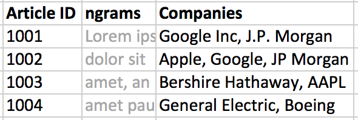
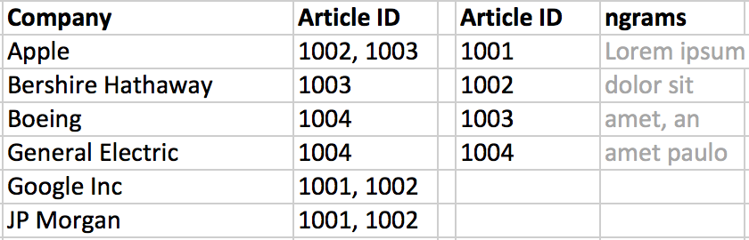
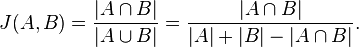
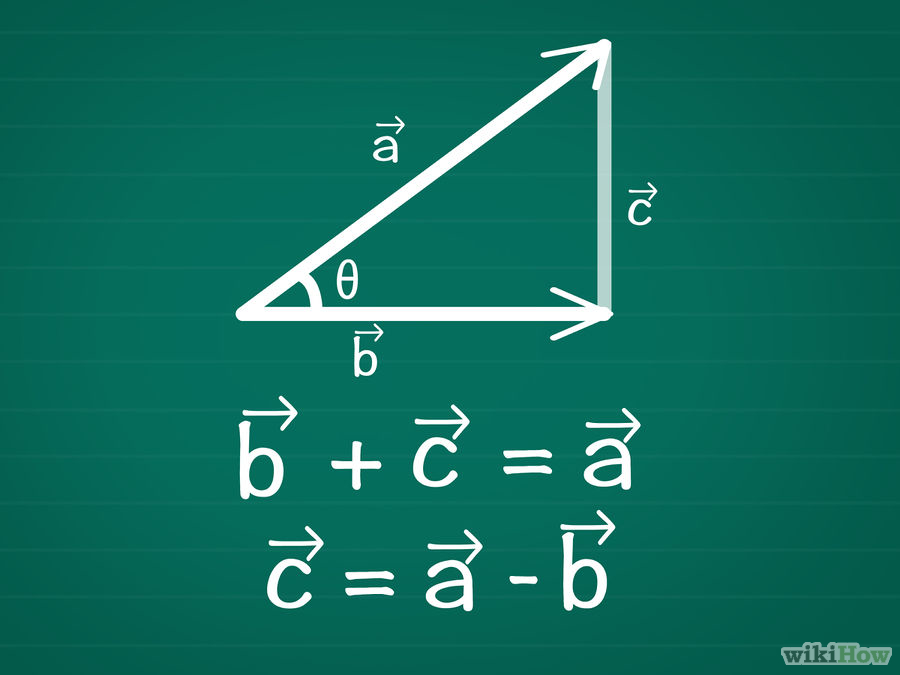

Fuzzy matching - Cosine Similarity

[ (go), (oo), (og), (gl), (le), (ei), (in), (nc) ]
google = [1, 1, 1, 1, 1, 0, 0, 0]
google inc = [1, 1, 1, 1, 1, 1, 1, 1]
cosine similarity = 0.79
I interned at a big insurance company and worked on some very interesting projects
Goals:
Actuary - Subset of statistics that focuses on insurance
There's a lot of overlap
But here's what I've found about data scientists
... is a liability insurance payable to the directors and officers of a company, or to the organization(s) itself, as indemnification (reimbursement) for losses or advancement of defense costs in the event an insured suffers such a loss as a result of a legal action brought for alleged wrongful acts in their capacity as directors and officers. Such coverage can extend to defense costs arising out of criminal and regulatory investigations/trials as well; in fact, often civil and criminal actions are brought against directors/officers simultaneously...
Source: Wikipedia
Protection when a company's officers get sued.
Can we use news data to predict D&O non-SCA claims?
Goal: Provide tool for underwriters to search news on a potential new customer to gauge insurability and price premium factor
Simple enough: find all companies listed in news articles
Problems:
News data was only a trial
One month left
I cannot keep raw text data
Take out stopwords
[and, or, if, but, to, the, a, you, we, I, they, it, be, not, that, this...]
"Walmart announced Friday that it is closing 269 stores worldwide as it sharpens its focus on its supercenters and e-commerce business."
Walmart announced Friday closing 269 stores worldwide sharpens focus supercenters e-commerce business.
"To be or not to be that is the question
Whether tis nobler in the mind to suffer"
question whether nobler mind suffer
But what about:
Ideal solution: Named Entity Recognition (NER)
"Warren Buffett's Berkshire Hathaway said Monday it agreed to spend $37.2 billion for Precision Castparts -- the most it has ever paid for a company." [link]
Warren Buffett's Berkshire Hathaway said Monday it agreed to spend $37.2 billion for Precision Castparts-- the most it has ever paid for a company.
n-grams separates text in n word chunks
"To be or not to be that is the question" in 2-grams:
[(to be), (be or), (or not), (not to), (to be), (be that), (this is), (is the), (the question)]
To look up articles from companies - transform from wide to long table


Fuzzy Matching or approximate string matching is the technique of finding strings that match a pattern approximately. [source]
Counts the number of edits from 1 string to another.
Edits are insertion, deletion, or substitution
kitten → sitten (substitution of "s" for "k")
sitten → sittin (substitution of "i" for "e")
sittin → sitting (insertion of "g" at the end)
Edit distance of 3

kitten = [ (ki), (it), (tt), (te), (en) ]
sitting = [ (si), (it), (tt), (ti), (in), (ng) ]
Jaccard index = 2/9
google = [ (go), (oo), (og), (gl), (le) ]
google inc = [ (go), (oo), (og), (gl), (le), (ei), (in), (nc) ]
Jaccard index = 5/8
[ (go), (oo), (og), (gl), (le), (ei), (in), (nc) ]
google = [1, 1, 1, 1, 1, 0, 0, 0]
google inc = [1, 1, 1, 1, 1, 1, 1, 1]
cosine similarity = 0.79
Two vectors a = [4,3], b = [4,0]

Hadoop:
Robust Natural Language Toolkit package for Python
Natural Language Processing with Python
by Steven Bird, Ewan Klein, and Edward Loper
http://www.nltk.org/book/